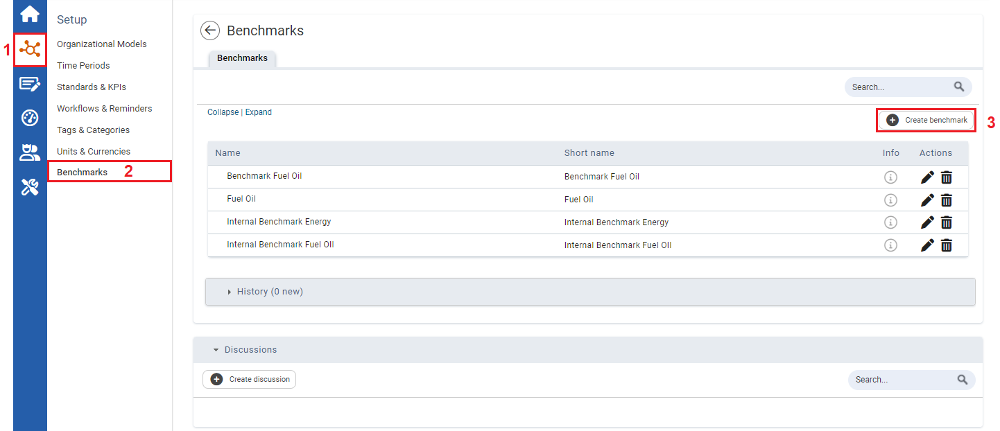
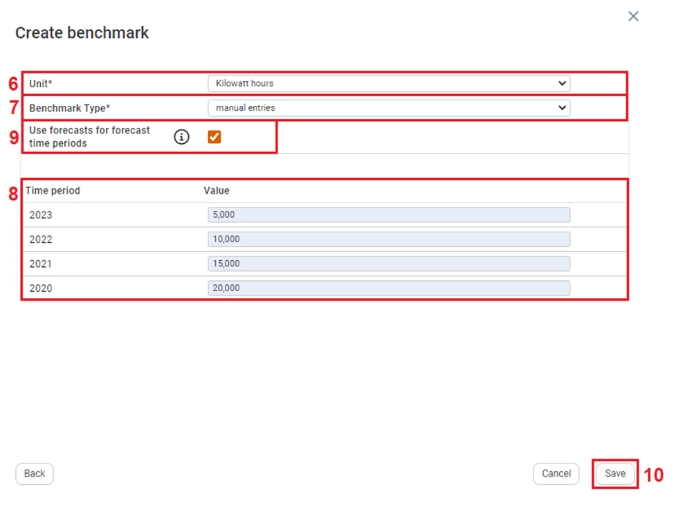

Create benchmark. The Create benchmark window opens.
Create benchmark. The Create benchmark window opens.
To Create Benchmarks using Manual Entries:

| 1 | On the left navigation panel, click Setup. |
| 2 | On the menu. click Benchmarks. The Benchmarks module opens. |
| 3 | Click Create benchmark. The Create benchmark window opens. |

| 4 | Fill in Name*, and Short name*. Filling in Folder and Description are optional. |
| 5 | Click Next. The second Create Benchmark window appears. |

| 6 | Click the Unit* dropdown textbox and select a unit.
|
| 7 | Click the Benchmark Type* dropdown textbox and select manual entries. The Time period and Value section appears. |
| 8 | For the years you want to include a benchmark value fill in values in the value textboxes. |
| 9 | Once a minimum of 3 Time period values have been inputted, you can select the Forecast option. |
| 10 | Click Save. |